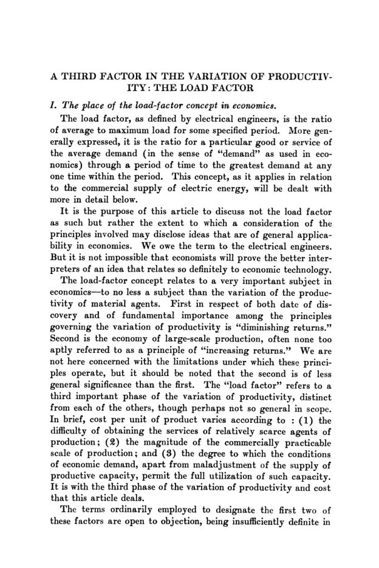

Watkins e o terceiro fator da produtividade
Leitura: 8 min
G. P. Watkins leva para a teoria econômica um conceito dos engenheiros eletricistas: o custo unitário depende de quanto a demanda deixa usar a capacidade instalada, da usina ao bonde e ao hotel de veraneio.


Nos dias úteis de dezembro de 1913, o mês de maior demanda, a produção horária do sistema da New York Edison em Manhattan e no Bronx chegou, no horário de pico, a 183% da média do dia e caiu, de madrugada, a 34%. A usina tinha de ser construída para o pico; o resto do dia, parte dela ficava parada. Para um sistema urbano, com consumo denso e variado, era um resultado bom.
O dado aparece no início de um longo artigo de G. P. Watkins, de Nova York, na American Economic Review de dezembro de 1915. A proposta é tirar um conceito da tarifa elétrica e colocá-lo na teoria da produtividade: o fator de carga, que os engenheiros definiam como a razão entre a carga média e a carga máxima num período.
O que é o terceiro fator?
Watkins parte dos dois princípios clássicos de variação do custo unitário. O primeiro são os rendimentos decrescentes: aplicar mais trabalho e capital a uma área fixa de terra rende cada vez menos. O segundo são as economias de produção em grande escala, chamadas de rendimentos crescentes. Ele considera os nomes imprecisos, porque um se refere a uma área de terra e o outro à empresa, e uma mesma fazenda pode exibir os dois ao mesmo tempo.
Propõe então três nomes paralelos. O fator de proporcionalidade generaliza os rendimentos decrescentes a qualquer agente escasso usado em proporção inadequada com os demais. O fator de densidade cobre as economias de escala e a densidade do mercado: uma ferrovia lucra mais quando a região que atende cresce em população e tráfego. O terceiro, o fator de carga, mede até que ponto as condições da demanda permitem operar a capacidade de forma contínua.
“Os economistas podem aprender muito com os engenheiros.” (“Economists can learn much from engineers”)
Por que o conceito nasceu na eletricidade?
Por duas razões. A energia elétrica não pode ser armazenada de forma econômica para esperar o consumidor, e juros e depreciação do capital fixo formam parte muito grande do custo unitário, quase tanto quanto nas ferrovias. A definição oficial do American Institute of Electrical Engineers fala da razão entre potência média e potência máxima de uma máquina, usina ou sistema.
O exemplo do autor é simples. Se dois consumidores têm a mesma demanda de potência, e um a usa por uma hora ao dia e o outro por cinco, o encargo de capital por quilowatt-hora do primeiro é cinco vezes maior. Há uma ressalva, que dá origem a um segundo conceito: se o consumidor de uma hora usa energia das 17h às 18h, depois de o outro ter consumido do meio-dia às 17h, ele não exige capacidade adicional. O fator de diversidade mede essa diferença de horário entre os picos dos consumidores e o pico do sistema.
Daí a política das companhias: tarifas baixas para usos fora do pico, sobretudo os novos. O fornecimento começou pela iluminação pública, passou à iluminação comercial e doméstica, aos motores e elevadores, às baterias de automóveis, aos aparelhos domésticos e à refrigeração, que o autor via como o próximo grande campo.
Onde mais o fator de carga aparece?
Em todo serviço que exige muito capital fixo e precisa ser consumido onde e quando é oferecido. O telégrafo criou a carta noturna a tarifa reduzida; os cabos submarinos testavam tarifas fora do pico. Nas ferrovias pesa mais a densidade, mas o fator de carga explica as tarifas de excursão por temporada e o esforço para formar trens mais longos com vagões cheios. No correio, o problema é o pico do Natal.
Nos bondes, o pico é diário. Num dia típico de novembro de 1910, segundo contagens da Public Service Commission, dos 174.224 passageiros que cruzaram a Ponte do Brooklyn rumo a Manhattan em 24 horas, 80.618 passaram entre 7h e 9h: quase metade do total em um doze avos do tempo. O passageiro em pé, segurando a alça, é o resultado de uma escolha econômica, porque oferecer assento a todos no pico multiplicaria o custo.
Na indústria comum o problema é sazonal. O órgão de estatística do trabalho de Nova Jersey publicava, para 1910, uma razão de utilização das fábricas de 74,92% na média de todas as indústrias, de 64,42% em estruturas de aço e de 88,12% em papel. Em Massachusetts, com 305 dias úteis no ano, as olarias funcionaram em média 153 dias. Os hotéis de montanha suíços ocupavam 76% dos leitos em agosto e 14% em dezembro, e as estâncias passavam a buscar hóspedes no inverno. Na agricultura, a máquina de plantar ou colher trabalha algumas semanas por ano, razão pela qual, para o autor, a lavoura usa menos capital que a fábrica.
O que o conceito diz sobre o trabalho?
Watkins vê no salário do pessoal permanente, a diretoria, os técnicos, os supervisores, um custo fixo como o do capital: a empresa não dispensa esses empregados quando o movimento cai, e o custo unitário depende de usar continuamente seu tempo. Os assalariados por hora, ao contrário, são ajustados à produção como a matéria-prima.
A consequência para o emprego é a parte mais original do texto. Onde há muito capital fixo, o empregador tem interesse próprio em manter a fábrica funcionando o ano todo e em conservar uma força de trabalho estável. Onde quase não há capital, como no trabalho a domicílio de muitos ofícios sazonais, nada impede que toda a flutuação da demanda recaia sobre os trabalhadores. Muitos ofícios sazonais, prevê, deixarão de sê-lo à medida que usarem mais capital, embora alguns, como a conserva de frutas, continuem presos à estação. Uma jornada de oito horas em 305 dias corresponde a um fator de carga de apenas 28% sobre o uso contínuo das instalações.
E no consumo?
O mesmo raciocínio decide quanto vale investir num bem durável: poucos constroem casas de veraneio caras para usar um mês por ano. O autor cita o movimento por um uso mais amplo das escolas, as escolas de verão das universidades e a remoção da neve em Manhattan, que custou US$ 1.726.000 entre 14 de fevereiro e 31 de março de 1914 com equipamento improvisado, já que não compensa comprar máquinas para meia dúzia de dias por ano. A campanha para fazer as compras de Natal mais cedo é, para ele, um esforço para educar o consumidor a reduzir o pico.
Como os três fatores atuam juntos?
O exemplo final é uma companhia de bondes. O terreno caro de Manhattan leva a garagens de vários andares: proporcionalidade. A linha dupla transporta mais que o dobro de uma linha simples sem custar o dobro, e o tráfego urbano cresce mais ou menos com o quadrado da população enquanto a extensão das linhas acompanha a população: densidade. A hora do rush impõe capacidade ociosa no resto do dia: carga. Para Watkins, os três princípios são de importância coordenada, e nenhuma explicação de preços relativos ou de tarifas diferenciadas dispensa qualquer um deles.
Daí uma advertência à contabilidade de custos, que costuma tratar dois fatores como constantes ou supor que não há variação de produtividade. O custo unitário de um produto depende do grau de uso das instalações, e a variação de tarifas por horário ou classe de consumidor tem relação causal com essa variação de custo, ainda que não seja paralela a ela.
Na minha leitura
Na minha leitura, o artigo faz uma operação teórica de valor: reconhece que o custo médio de um serviço não é um número, mas uma função do perfil temporal da demanda. Isso desloca a discussão das tarifas diferenciadas, que o público tendia a ver como discriminação arbitrária, para o terreno do custo de capacidade.
O texto também mostra o método do autor. Watkins trabalha com razões simples, demanda média sobre máxima, dias de operação sobre dias úteis, leitos ocupados sobre leitos disponíveis, e as aplica a setores muito diferentes. O resultado é menos uma teoria formal que um instrumento de comparação, que ele próprio reconhece não se prestar a tratamento matemático completo.
Glossário
- Fator de carga
- razão entre a demanda média e a demanda máxima de um serviço num período.
- Fator de diversidade
- razão entre a soma das demandas máximas dos consumidores e a demanda máxima do sistema.
- Fator de capacidade
- razão entre a produção média e a produção teórica com uso contínuo da capacidade nominal.
- Fator de proporcionalidade
- nome de Watkins para a generalização dos rendimentos decrescentes.
- Fator de densidade
- nome de Watkins para as economias de escala e de densidade do mercado.
- Encargos fixos
- juros e depreciação do capital investido, que não variam com a quantidade produzida.
Fontes
- A Third Factor in the Variation of Productivity: The Load Factor — G. P. Watkins (New York City) (pp. 753–786). JSTOR · Internet Archive (PDF)
- Edição completa, com os demais artigos: Nº 138 do Arquivo.
Documento em domínio público (EUA, publicado antes de 1931), via JSTOR Early Journal Content e Internet Archive. Resumo e comentário do autor deste site, sem afiliação com a American Economic Association. Encontrou um erro? Escreva: a correção é publicada no próprio texto, com data.
↑ Nº 138 · A população da Europa, o fator de carga e o canal do Panamá Huebner e o primeiro ano do canal do Panamá →